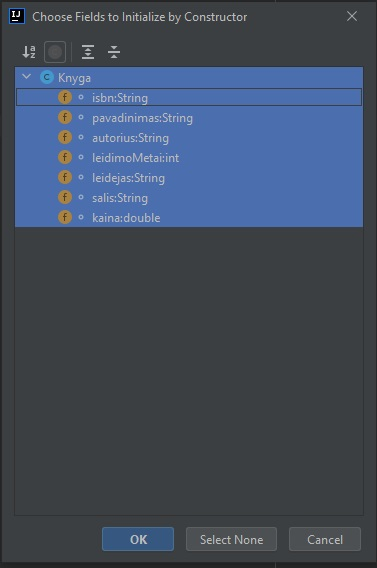
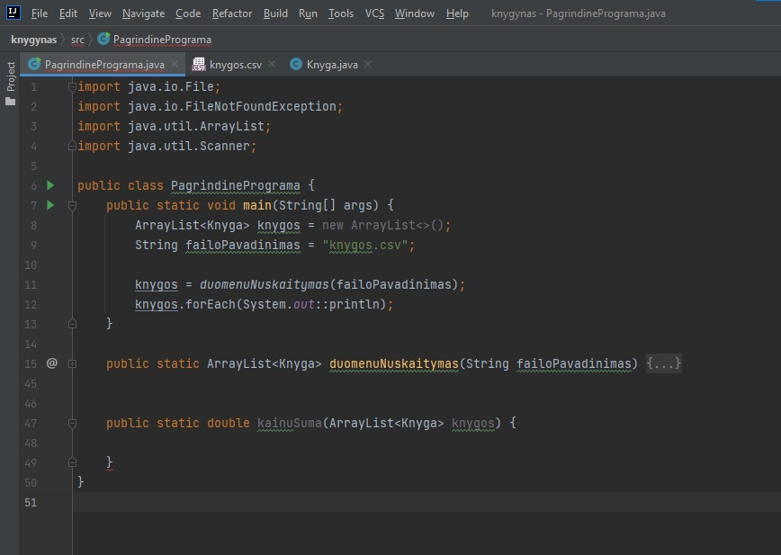

Java klasės pamoka
Užduotis:
- Susikurti projektą bei PagrindinePrograma.java failą (klasę)
- Susikurti "Knyga" klasę. Joje turėtų būti tokie kintamieji:
- isbn - knygos identifikacinis kodas sudarytas iš dešimt skaičių, atskirtų trim brūkšneliais. Pvz.: (95-8238-577-4) (iš viso 13 simbolių)
- Pavadinimas
- Autorius
- Leidimo metai
- Leidėjas
- Šalis
- Kaina
- Pagrindinėje programoje sukurti tokias funkcijas:
- Duomenų nuskaitymo - funkcija gauna String failoPavadinimas, o grąžina ArrayList<Knyga> - nuskaitytas knygas iš duomenų failo. Failo kurtis nereikia, jis yra įkeltas Discord’e.
- Sumos - funkcija gauna Knygų ArrayList’ą, o turėtų grąžinti double skaičių - Knygų kainos sumą.
- Vidurkio - funkcija gauna Knygų ArrayList’ą, o turėtų grąžinti double skaičių - Knygų kainos vidurkį.
- Paieška - funkcija gauna String isbn, o turėtų grąžinti Knyga objektą - vieną knygą, kurios yra toks isbn
- Funkciją, kuri gauna ArrayList<Knyga> knygos, o grąžina String šalis - šalies pavadinimą, iš kurios yra daugiausiai knygų. Galima daryti prielaidą, kad knygos gali būti tik iš šių šalių: "Chile, Costa Rica, Colombia, Cuba, Bolivia". Darant šią prielaidą, galima pasidaryti "dažnumo masyvą", kuriame bus penki skaičiai. Nulinis skaičius rodys kiek knygų yra iš Chile, pirmas kiek iš Costa Rica, antras iš Colombia ir t.t. Nusinulinti visus tuos skaičius. Tada eiti per visas Knygas, tikrinti jų šalį ir pridėti vienetą prie atitinkamo skaičiaus "dažnumo masyve". Galima šią užduotį (patogiau) daryti su HashMap, tačiau atsiklausti iš pradžių daugiau informacijos kaip tą padaryti.
- Funkciją, kuri gauna ArrayList<Knyga> knygos, o grąžina String[3] topLeidyklos - top 3 leidyklas, pagal išleistų knygų skaičių.
- Filtravimo - funkcija gauna String autorius, ArrayList<Knyga> knygos, o turėtų grąžinti ArrayList<Knyga> - arraylist’ą, kuriame yra visos gauto autoriaus knygos.
- Analogiškai padaryti filtravimą leidėjui ir šaliai.
- Padaryti metų filtravimo funkciją, kuri gauna int metai, ArrayList<Knyga> knygos ir grąžintų ArrayList<Knyga> - ArrayList’ą tų knygų, kurios yra išleistos vėliau nei gauti metai.
- Padaryti kainų nuo-iki filtravimą. Funkcija gauna double startKaina, double limitKaina, ArrayList<Knyga> knygos, o grąžina ArrayList<Knyga> - arraylist’ą knygų, kurios yra brangesnės nei startKaina, bet pigesnės nei limitKaina.
- Atlikti rikiavimą arba kuriant Comparator’ius viduje klasės arba naudojant Lambda funkcijų trumpinius.
- Rikiuoti pagal pavadinimą abėcėlės didėjančia tvarka
- Rikiuoti pagal leidimo metus mažėjančia tvarka
- Rikiuoti pagal kainą didėjančia tvarka
- Rikiuoti pagal autorių, o jeigu autoriai tokie patys, tada rikiuoti pagal knygos pavadinimą (čia derėtų kurti Comparator su if’u if’e)
- Susikurti projektą bei PagrindinePrograma.java failą (klasę). Norint sužinoti/prisiminti, kaip tai padaryti, spauskite čia
- PagrindinePrograma.java susikurkite main metodą (įraškite main ir pasirinkite, jog nereiktų rašyti viso ilgo teksto)


- Susikurkite Knyga.java failą (klasę)
- Joje turėtų būti tokie kintamieji:
- isbn - knygos identifikacinis kodas sudarytas iš dešimt skaičių, atskirtų trim brūkšneliais. Pvz.: (95-8238-577-4) (iš viso 13 simbolių)
- Pavadinimas
- Autorius
- Leidimo metai
- Leidėjas
- Šalis
- Kaina
- isbn darysime String, kadangi skaičiai IR brūkšniukai (simboliai). Pavadinimas String, kadangi tai yra tekstas, Autorius taip pat String, kadangi tai yra tekstas. Leidimo metai int (integer), kadangi metai visada būna sveikas skaičius. Leidėjas String, kadangi tai tekstas (pavadinimas), šalis taip pat String, kadangi tai tekstas. Kaina yra double, kadangi tai skaičius su kableliu. Taip pat juos darome "private", kadangi tai yra klasės kintamieji

- Toliau, po kintamųjų (bet prieš klasės uždaromąjį riestinį skliaustą, kadangi norime viską daryti klasės viduje) spaudžiame dešinį pelės klavišą ir pasirenkame "Generate..."

- Toliau, renkamės "Constructor", kadangi kursimės konstruktorius. Vieną pilną, vieną tuščią. Taip derėtų pasidaryti visada, tačiau, kai reikia galima susikurti ir dalinai pilnų konstruktorių (nebūtina)
- Kad sukurti tuščią konstruktorių spaudžiame "Select none"
- Kad sukurti pilną konstruktorių vėl spaudžiame dešinį pelės klavišą, "Generate...", "Constructor" ir tada pažymime visus kintamuosius su CTRL klaviatūros mygtuku ir kairiu pelės klavišu. (arba tiesiog CTRL + A paspausti su klaviatūra) 
- Spaudžiame "Ok" ir dabar kodas turėtų atrodyti štai taip:

- Toliau, generuojame getterius ir setterius. Kadangi klasės kintamieji yra private, jų negalime pasiekti tiesiogiai, tačiau jų reikšmę galime gauti per getterius, o nustatyti reikšmę per setterius. Tai yra speciali Javos taisyklė vadinama "enkapsuliacija".
- Norint sugeneruoti getterius ir setterius, spaudžiame dešinį pelės klavišą, "Generate...", "Getter and Setter", pasirenkate visus ir spaudžiate "Ok".
- Toliau, norint, jog mūsų Knyga klasės objektus išvestų atitinkamai į konsolę/failą, reikia sugeneruoti toString() metodą, kadangi, jei jo nebus - išves tiesiog objekto bitkodą, kuris mums nėra aktualus.
- Spaudžiame dešinį, "Generate", toString(), pažymime visus ir spaudžiame "Ok". Jūsų kodas turėtų atrodyti taip:
Detalesni nurodymai bei pagalba
public class Knyga {
private String isbn;
private String pavadinimas;
private String autorius;
private int leidimoMetai;
private String leidejas;
private String salis;
private double kaina;
public Knyga() {
}
public Knyga(String isbn, String pavadinimas, String autorius, int leidimoMetai, String leidejas, String salis, double kaina) {
this.isbn = isbn;
this.pavadinimas = pavadinimas;
this.autorius = autorius;
this.leidimoMetai = leidimoMetai;
this.leidejas = leidejas;
this.salis = salis;
this.kaina = kaina;
}
public String getIsbn() {
return isbn;
}
public void setIsbn(String isbn) {
this.isbn = isbn;
}
public String getPavadinimas() {
return pavadinimas;
}
public void setPavadinimas(String pavadinimas) {
this.pavadinimas = pavadinimas;
}
public String getAutorius() {
return autorius;
}
public void setAutorius(String autorius) {
this.autorius = autorius;
}
public int getLeidimoMetai() {
return leidimoMetai;
}
public void setLeidimoMetai(int leidimoMetai) {
this.leidimoMetai = leidimoMetai;
}
public String getLeidejas() {
return leidejas;
}
public void setLeidejas(String leidejas) {
this.leidejas = leidejas;
}
public String getSalis() {
return salis;
}
public void setSalis(String salis) {
this.salis = salis;
}
public double getKaina() {
return kaina;
}
public void setKaina(double kaina) {
this.kaina = kaina;
}
@Override
public String toString() {
return "Knyga{" +
"isbn='" + isbn + '\'' +
", pavadinimas='" + pavadinimas + '\'' +
", autorius='" + autorius + '\'' +
", leidimoMetai=" + leidimoMetai +
", leidejas='" + leidejas + '\'' +
", salis='" + salis + '\'' +
", kaina=" + kaina +
'}';
}
}
- Susikūrėme klasę, toliau reikia kurti funkcijas PagrindinePrograma faile. Atsidarome tą failą ir main funkcijos viduje susikuriame knygų ArrayList'ą - jame saugosime visas knygas bei String failoPavadinimas - čia bus failo pavadinimas, iš kurio skaitysime knygas.
- Toliau, kuriame funkciją, kuri nuskaitys knygas iš tekstinio failo. (po main uždaromojo riestinio skliausto) Funkcija gaus String failoPavadinimas. Taip darome, jog funkcija būtų universalesnė. Padarę, jog funkcija failo pavadinimą gautų, o ne visada nuskaitytų iš to pačio, mes padarome, jog funkcija veiktų su bet kokiais failais.
- Kuriame funkciją rašydami "public static", toliau rašome kokį duomenų tipą funkcija grąžins. Šiuo atveju tai yra ArrayList<Knyga>, kadangi funkcija grąžins visas nuskaitytas knygas (ką kiekviena funkcija grąžins yra nurodyta ir šios užduoties nurodymuose). Toliau rašome funkcijos pavadinimą. Dedame paprastus skliaustus ir skliaustų viduje yrašome kokio duomenų tipo ir kokio pavadinimo parametrus gaus (String failoPavadinimas). Atidarome riestinius skliaustus ir pradedame funkciją.
- Toliau, funkcijoje reikia parašyti try ir catch blokus, kadangi vėlgi pagal Javos taisykles, norint skaityti iš failo būtina gaudyti FileNotFoundException. try bloke susikuriame File objektą (jam sukurti naudojame failoPavadinimas), toliau susikuriame Scanner objektą (jam naudojame File objektą, kurį susikūrėme prieš tai. Viskas turėtų atrodyti štai taip:
- Tai yra standartinė duomenų nuskaitymo iš failo procedūra. Jos nereikia mokėti atmintinai, tiesiog žinoti iš kur pasižiūrėti (pavyzdžiai), kadangi ji visada kartojasi.
- Toliau, jau reikia skaityti duomenis ir juos išsaugoti. Ši procedūra yra dažnai panaši, tačiau nebūtinai visada tokia pati. Priklauso nuo to kaip duomenys yra išdėstyti/išsaugoti bei kokie duomenys ten yra.
- Šioje užduotyje mūsų duomenys yra .csv faile, tai reiškias, jog kiekvienas "stulpelis" yra atskirtas kableliu. Pirmame stulpelyje yra isbn, antrame pavadinimas, trečiame autorius, ketvirtame leidimo metai ir t.t.
- Norint nuskaityti visas knygas, reikia skaiyti kiekvieną eilutę iš tekstinio failo. Toliau, tą eilutę skaldyti per kablelius, kadangi kableliai skiria skirtingus stulpelius. Suskaldyta eilutė bus visada tokio pat dydžio String masyve. Taigi masyvo nulinis elementas visada bus isbn, masyvo pirmas elementas pavadinimas, masyvo antras bus autorius ir t.t. Kadangi, masyvas yra String tipo, kai kuriuos kintamuosius (int ir double) turėsime konvertuoti į jų tipus. Patogiausiai, jog nepasimesti yra susikurti papildomus "laikinus" kintamuosius kiekvienam stulpeliui ir kurį reikia konvertuoti. Toliau išsaugome tuos duomenis į Knyga objektą per konstruktorių arba setterius, o tą objektą į dedameį ArrayList'ą.
- Šie žingsniai taip pat yra standartiniai nuskaitant tam tikros klasės objektus iš .csv failo
- Toliau, pasižiūrėsime kiekvieną žingsnį detaliau
- Nuskaitome pirmą eilutę, bet jos neišsaugome, kadangi ji mums yra nereikalinga. Toliau, sukame while ciklą, kol failoSkaitytuvas turi sekančių eilučių iš failo. Kitaip sakant sukam ciklą per visas failo eilutes.
- While ciklo viduje (šiuos veiksmus kartos kiekvienai eilutei) nuskaitome eilutę į String tipo kintamąjį. Eilutę išskaldome į String tipo masyvą.
- isskaldytaEilute yra String[] masyvas. Masyvo kintamuosius pasiekiame per laužtinius skliaustus. Kadangi, tekste eilutės yra išdėstytos ta pačia tvarka, tai isskaldytaEilute[0] visada bus isbn, isskaldytaEilute[1] visada bus pavadinimas, isskaldytaEilute[2] visada bus autorius ir t.t.
- Žinodami tai, galime susikurti laikinus kintamuosius. Kadangi metai ir kaina nėra String tipo kintamieji - juos konvertuojame.
- Susikuriame naują Knygos objektą, į kurį su konstruktoriu ir sudėsime šiuos kintamuosius.
- Kadangi to nepadarėme prieš tai, tai dabar grįžtame truputį atgal ir susikuriame Knygų ArrayList'ą, kadangi neturėdame ArrayList'o, neturėsime į ką saugoti visas knygas. Kai jau susikuriame ArrayListą (prieš ciklą) tada galima ciklo viduje kiekvieną knygą vis addinti (pridėti) į arraylistą. Taip pat grąžiname tą ArrayList'ą per return po ciklo ir try bloko.
- Belieka šią funkciją panaudoti main dalyje bei jas išvesti su System.out.println, jog pasitikrintume ar tikrai gerai nuskaitė. Išvedimui pavyzdyje naudoju forEach išvedimą, jog kiekvieną knygą išvestų į atskirą eilutę ir taip būtų patogiau susitikrinti.
- Toliau, reikia sukurti funkciją, kuri apskaičiuotų visų Knygų kainų sumą.
- Vėlgi, funkciją kuriamės tokiu pačių principu: "public static duomenųTipas funkcijosPavadinimas(parametrai). Kur duomenų tipas bus double, kadangi kainos yra double, o jas sumuosime ir rezultatą grąžinsime. Funkcijos pavadinimas tai tiesiog gali būti kainuSuma. O parametrai, tai ką funkcija gaus - ši funkcija turėtų gauti knygų arraylistą, kurių kainų sumą skaičiuos. 
- Kadangi tai yra panašiai kaip masyvo sumos funkcija, tai ir čia turime susikurti sumos kintamąjį ir jį "nusinulinti".
- Toliau reikia sukti ciklą, kuris pereitų per kiekvieną Knygą. Kitaip sakant for-each ciklą. Kad gautume geriausią for-each ciklo šabloną, rašome "iter" (be kabučių) ir spaudžiame enter arba pasirenkame su pele. Kai paspausite enter, turėtų išmesti tokį arba panašų šabloną:
- ciklo viduje "knygo" kintamasis yra vis skirtinga knyga, kurią paima kiekviename ciklo etape. Todėl, norėdami rasti visų knygų kainų sumą turime prie sumos vis pridėti "knygo" objekto kainą. Kadangi "knygo" yra Knyga objektas, negalime tiesiog sakyti "suma = suma + knygo", turime sakyti "suma = suma + knygo.getSuma()", kad nurodyti tiksliai kurį objekto kintamąjį turime omenyje. Sumą returniname ir funkcija yra baigta.
- Toliau, reikia sukurti funkciją, kuri apskaičiuotų knygų kainų vidurkį.
- Norint apskaičiuoti vidurkį reikia padalinti visų knygų kainų sumą iš visų knygų kiekio.
- Sumos funkciją mes jau turime, tad ją galėsime pernaudoti. Knygų kiekį galime taip pat paimti, naudodami ArrayList metodą size(). Belieka tai užrašyti funkcijoje. Funkciją kuriame tuo pačiu šablonu, parametruose funkcija gaus arraylistą, funkcija grąžins double. Funkcijos viduje iš karto galime sakyti, kad grąžintų rezultatą suma dalinti iš kiekio:
- Sekanti užduotis yra sukurti paieškos funkciją, kuri grąžintų visus Knygos duomenis funkcijai paduodant tik Knygos isbn. Funkciją vėl kuriamės tuo pačiu principu, per parametrus ji gaus String isbn - ieškomos Knygos isbn, o grąžins Knyga objektą - rastą knygą.

- Taip pat dar funkcija gaus ir knygų ArrayList. Funkcijos viduje vėlgi turime sukti ciklą, kuris eis per visas Knygas, taigi vėl rašome "iter" ir spaudžiame enter.
- Vėlgi, "knygo" yra vis sekančios Knygos objektas. Taigi turime eiti per visas Knygas ir tikrinti ar tos Knygos isbn sutampa su mūsų ieškomu isbn. Jeigu sutampa - grąžiname tą knygą, jeigu ne - sukame ciklą toliau.
- Detaliau išnagrinėti if'ą galime su šiuo paveiksliuku:
- Galiausiai, po ciklo reikia dar parašyti "return null", taip darome todėl, nes jeigu perėjus per visas Knygas nei viena iš jų netenkins if sąlygos (nei vienas isbn nesutaps su ieškomu), tai tada turime grąžinti null (tuščią objektą)
<p> yra pastraipos žymė